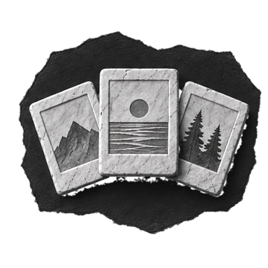
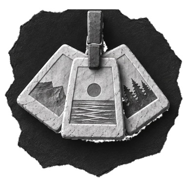
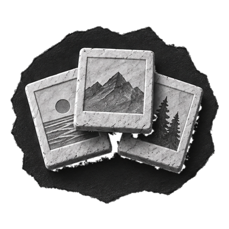
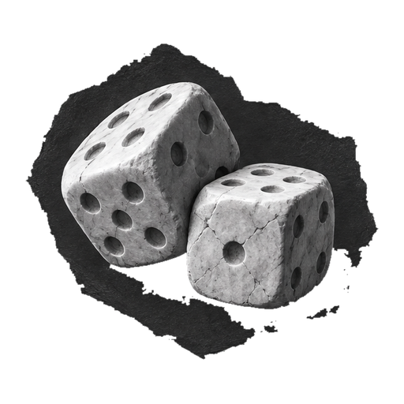

PhotoDelete · Random Review · Icon Study
随机整理，左侧图标候选
全部按动作行的 50pt 实际大小渲染。重点看两件事：50pt 下谁最清楚，以及谁还能读出“随机/一批照片”，而不是又一个分类。
0Current · Stack
当前采用：三张照片扇形 + 深色石板贴纸，像一叠照片。

随机整理21 张 · 三分钟看完AClip batch
夹子夹住三张照片：像“挑出来的一批”，行动感更强，剪影也更好认。

随机整理21 张 · 三分钟看完BPile
更紧凑的三张叠放，中间一张在前；比当前扇形更团、更清楚。

随机整理21 张 · 三分钟看完CDice
语义最直接，但更像工具；hero 那边已经否过一次骰子。

随机整理21 张 · 三分钟看完DShuffle
界面语义最清楚、最省细节，但脱离石膏插图家族。
ENo icon
最安静，靠标题和箭头就够了；但少了一个品牌记忆点。